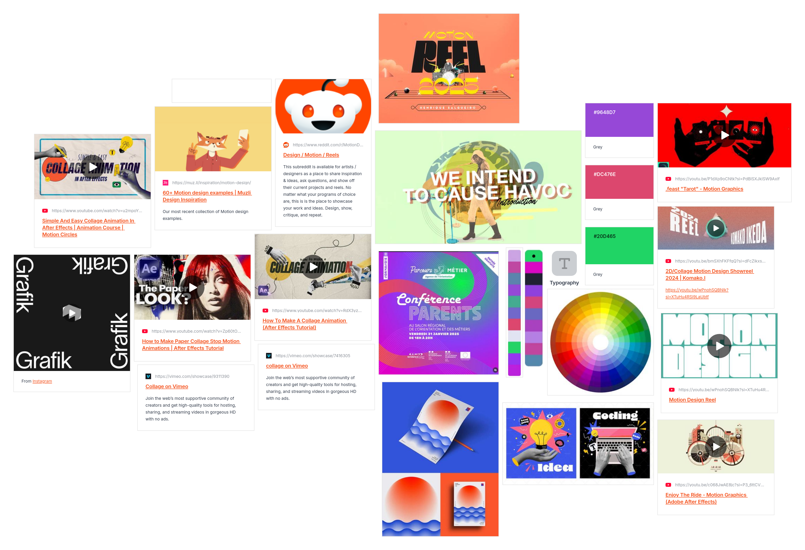
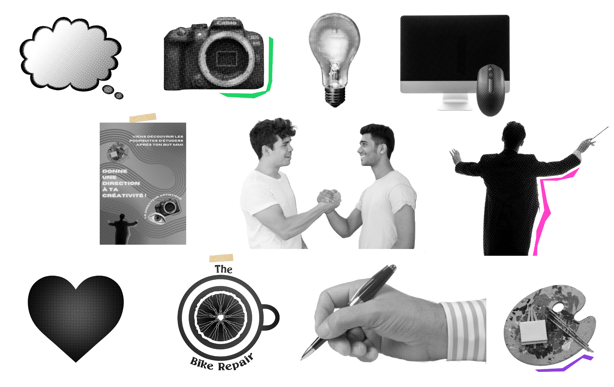

Motion design pour expliquer le métier du directeur artistique
Réalisé dans le cadre d’un travail en groupe à l’IUT pour notre projet personnel et professionnel (PPP), l’objectif de ce motion design était de répondre de manière claire et accessible à la question : « C’est quoi le métier du directeur artistique? ».
Le PPP a pour objectif d’aider les étudiants à définir leur profil, leurs appétences et à construire une stratégie de poursuite d’études ou d’insertion professionnelle. Dans ce cadre, notre groupe a choisi d’aborder la thématique de la poursuite d’études et des passerelles possibles après un BUT MMI (métiers du multimédia et de l'informatique), en se focalisant sur le parcours menant au métier de Directeur Artistique (DA).
Nous avons choisi le motion design pour expliquer le métier de directeur artistique sans rendre le contenu trop scolaire. Les animations permettent de rendre le sujet plus vivant et de capter l’attention tout au long de la vidéo.
Le projet a été réalisé en groupe de sept, avec une répartition des tâches où quatre d'entre nous se sont occupées d’une partie du motion design, et trois d'entre nous se sont occupées de la voix-off ainsi que les affiches. Le groupe du motion design (dont je faisais partie) s'est occupée de la création d'un moodboard dont le groupe des affiches a pu se baser dessus.
Le moodboard

Ensuite, pour ma part, j’ai réalisé la première partie de la vidéo (de 0:00 à 0:54), qui pose le contexte et introduit le sujet.
Je me suis également chargé de la fusion de toutes les parties du motion design. Cela comprenait l’assemblage des différentes séquences ainsi que la création des transitions afin d’assurer une continuité visuelle et narrative entre les parties de chaque membre du groupe. Ce travail était important pour garder une cohérence globale, tant sur le rythme que sur le style du projet final.
Pour les assets, j’ai choisi de les créer moi-même afin de garder une vraie cohérence avec mon univers graphique. J’ai volontairement transformé les images en stickers, avec un effet papier, un style que l’on retrouve aussi dans le reste de mon portfolio.
Les assets

Ce choix me permettait de laisser une trace identifiable de mon travail dans le projet, tout en apportant un rendu plus ludique et visuel au motion design. L’idée était que l’on puisse reconnaître ma patte graphique et faire le lien entre ce projet et les autres créations présentes dans mon portfolio.
Ce projet m’a permis de mieux comprendre les étapes de création d’un motion design en équipe, de l’écriture du contenu jusqu’au rendu final.
Ce projet correspond d'ailleurs à mon deuxième motion design, ce qui m’a permis de gagner en assurance par rapport au premier (celui de la French Tech). J’ai pu améliorer la qualité de mes animations, notamment au niveau des transitions, en cherchant des enchaînements plus fluides et plus cohérents entre les différentes séquences.
J’ai également progressé dans ma manière de penser le rythme global d’une vidéo et d’adapter les animations au contenu. Ce projet m’a permis de consolider mes bases en motion design tout en développant un style plus maîtrisé et reconnaissable.
J’ai appris à m’adapter au travail des autres, à harmoniser différents styles et à réfléchir à des transitions efficaces pour rendre la vidéo fluide. J’ai aussi développé mes compétences en organisation et en gestion de projet, notamment en prenant en charge une partie clé du rendu final.
Et surtout, ça m'a permis d'en apprendre d'avantage sur le métier du directeur artistique qui m'était auparavant assez flou, car nous avions du faire des recherches approfondies pour pouvoir alimenter le motion design !